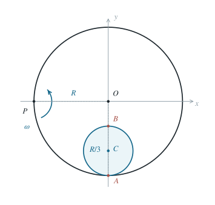

转动大圆环内滚动小圆环的两点加速度
用无滑动约束和转动系加速度变换，分别求内滚小圆环上两点的地面加速度。
1 题目
1.1 物理情境
半径为 的大钢环在其平面内绕环上一固定点 转动。半径为 的小钢环置于大环内侧，并与大环保持内切。考察小环位于大环最下方、切点为 的瞬间； 是小环直径的另一端，如图所示。
1.2 物理过程
大环以恒定角速度 绕 逆时针转动。小环沿大环内侧作无滑动滚动；当大环绕 转过一整周时，小环相对大环沿内壁恰好绕行两周。图示瞬间小环盘心处于大环中心的正下方。
1.3 已知参数和理想化假设
两环刚性、共面，接触处无滑动。取此瞬间大环中心 为坐标原点，， 轴向右、 轴向上。 指小环上的物质点，所求为它们相对地面的瞬时加速度。
1.4 求解目标
分别求小环上 、 两点的加速度矢量。

小环半径严格取 ，故 、、。
2 思路与提示
先确定小圈圆心的公转，再确定其相对大圈的转动；对指定物质点使用刚体加速度公式。
3 解答展开 / 收起
3.1 题设信息与匀速附加条件
题给“大环一周时小环相对绕行两周”只规定一段时间内的总角位移，不能据此确定瞬时角速度和角加速度。文字也未限定相对绕行方向。因此按原题数据，两点加速度没有唯一数值。以下先计算额外采用“相对大环以恒定角速度 逆时针绕行”时的结果，随后写出一般瞬时运动的公式。
在上述匀速正向条件下，大环周期 内相对公转角位移为 ，所以相对公转角速度为 。圆心轨道半径为 ，相对线速度为
小环在大环内侧滚动：相对大环，瞬时切点 的速度为零。由于 ，小环相对大环的自转角速度为顺时针，大小满足
3.2 在随大环转动的坐标系内求相对运动
在图示瞬间，。令 分别指向右、向上。相对大环，小环盘心在圆周底端向右运动，所以 。相对大环的小环自转为顺时针，故底端接触点 暂时静止，顶端物质点 的速度为两倍盘心速度：
盘心相对大环绕半径 的圆匀速运动，向心加速度指向 ，也就是向上：
相对盘心还以角速度大小 作圆周运动，向心加速度大小均为 ； 位于盘心下方，贡献向上， 位于盘心上方，贡献向下。两者与第（4）式相加，得到
3.3 从转动大环系变回地面系
大环参考系以 绕固定点 匀速转动。因此对环上任一点，地面加速度与相对大环的速度、加速度满足
这里 从固定点 指向所求点；由于 恒定，没有欧拉加速度项。图示瞬间 ，。
对 ，第（3）式使科里奥利项为零，而牵连向心项等于 。代入第（5）式，得
对 ，第（3）式给出不可忽略的科里奥利项 。因此
两结果的 分量相同，来自大环绕 转动的牵连向心加速度； 分量不同，主要因为 在转动大环系内并非瞬时静止。
4 方法与讨论
为展示题面缺少的瞬时信息，设相对公转角速度为有符号的 ，逆时针为正，小环半径为 、圆心距为 。
无滑动给小环相对自转角速度 ，故绝对自转角速度为 ，角加速度为 。
图示底端的圆心加速度为 ；其中第一项包含大环中心绕固定点 的向心加速度。
具体计算叉积时，用 。点 的角加速度项为 ，向心项为 ；点 两项分别为 和 。
圆心的水平项与 的角加速度项相加为 ，与 相加为 。
纵向分量对 为 ；对 为 。由此得到一般式。
对小环物质点使用 ，其中力臂对 分别为 、。
得到 ，以及 。
代入 ，回到上面条件计算的 与 两个纵向系数；一周期总转数并不能提供这两个瞬时条件。